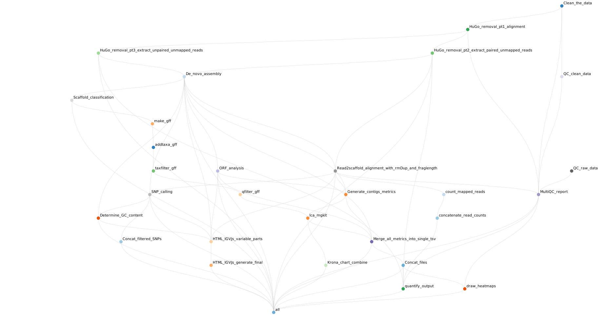

Jovian Illumina-based Metagenomics Workflow¶
 Click on the image for a large workflow-graph
Preparing your input data¶
Before using Jovian, you have to make sure that your data is suitable for analysis.
There are two major prerequisites:
- Your data has to be basecalled and demultiplexed.
- Your input
.fastq(.gz)files require a naming scheme that allows for read-identification.
Basecalling & demultiplexing:
Use bcl2fastq or bcl2fastq2 in order to basecall and demultiplex your data. See more on the Illumina website.
Naming your input files accordingly¶
The Jovian-Illumina Metagenomics workflow requires your input-files to be named accordingly in order to have proper analysis of both Illumina reads. Jovian needs both reads as separate files for a correct analysis.
However, Jovian is compatible with the default naming scheme of bcl2fastq & bcl2fastq2 basecallers/demultiplexers. Minimal manual work is therefore required.
The bcl2fastq naming scheme. which is compatible with Jovian, is as follows:
[SampleName]_[SampleNumber]_[LaneNumber]_[ReadNumber]_001.fastq.gz
Info
For more information about this naming scheme, please refer to the Illumina naming convention page
If you're using a naming scheme different than the one provided by Illumina, then make sure the names of your fastq files have the correct structure for processing by Jovian. For quick reference, the list below is a set of examples showing filenames which are compatible with Jovian.
Example_dataset1_R1.fastq.gz
Example_dataset1_R2.fastq.gz
Example_dataset2_R1_001.fastq.gz
Example_dataset2_R2_001.fastq.gz
Example_metagenomics-set_1.fq
Example_metagenomics-set_2.fq
Test_data_1.fastq
Test_data_2.fastq
Warning
We strongly discourage the use of special characters (@/\![];+()&^%$# etc) in your file names as well as the use of spaces.
Using spaces in your filenames is guaranteed to fail, please change these to underscores (_) beforehand.
Using special characters in your file names will cause errors in the downstream workflow.
Starting your analysis¶
A Jovian Metagenomics analysis can be started with a single command:
bash jovian illumina-metagenomics -i /path/to/your/illumina/data/
Please note that we do not look for input files recursively. All your fastq files need to be present in a single folder.
Jovian is able to both use "absolute" file paths as well as "relative" file paths in order to retrieve your raw data.
Example
Using an absolute file path for your raw data:
bash jovian illumina-metagenomics --input /mnt/data/illumina_sequencing_runs/virology/Run_005/
Using a relative file path for your raw data:
in this example there's a directory with the raw data two folders below the current working directory
bash jovian illumina-metagenomics --input ../../Run_005/
If you do not want to type illumina-metagenomics for every analysis, you can also use the following shorter alternatives:
illumina-meta | ilm-meta | im
Please see the Command line reference for more shorter alternative flags that you can use.
Additional useful commands for your analysis¶
Performing a test-run without processing any actual data¶
You can perform a test-run of the workflow without actually processing any data. This is useful to confirm there aren't any large issues with your input data.
You can do this by adding a -n to the end of your command (see the example below)
bash jovian illumina-meta -i ../raw_data/ -n
Change the stringency mode of the workflow¶
It's possible to change the stringency settings for the metagenomics workflow.
You can run the Metagenomics workflow in relaxed analysis mode, or in strict analysis mode.
Viral typing¶
This section is wrong (no longer done by hand), update when convenient
After a Jovian analysis is finished you can perform virus-typing (i.e. sub-species level taxonomic labelling). These analyses can be started by the command bash jovian -vt [virus keyword], where [virus keyword] can be:
| Keyword | Taxon used for scaffold selection | Notable virus species |
|---|---|---|
NoV |
Caliciviridae | Norovirus GI and GII, Sapovirus |
EV |
Picornaviridae | Enteroviruses (Coxsackie, Polio, Rhino, etc.), Parecho, Aichi, Hepatitis A |
RVA |
Rotavirus A | Rotavirus A |
HAV |
Hepatovirus A | Hepatitis A |
HEV |
Orthohepevirus A | Hepatitis E |
PV |
Papillomaviridae | Human Papillomavirus |
Flavi |
Flaviviridae | Dengue (work in progress) |
all |
All of the above | All of the above |